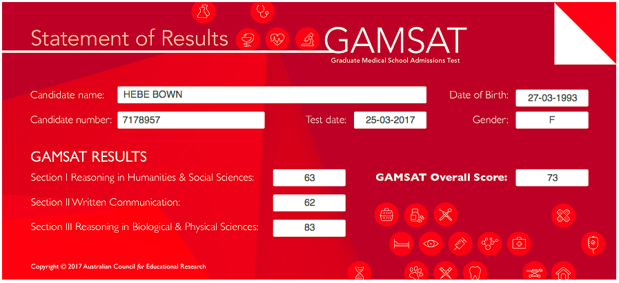

Hello everyone and welcome. It's me, Hebe.
The PDFs of my revision notes are at the bottom of the page but I thought some of you might like to know how I prepared for sitting the GAMSAT in March 2017.
I began studying for the GAMSAT in August 2016. Obviously, the first thing I looked up was the price of text books/prep courses. These made me shout "FUCK NO" pretty loudly so I decided to go it alone.
My Results of 73
{kind=link}
S3 Preparation
I started by finding a list of all the suggested topics for the exam off of a website advertising GAMSAT prep courses.
These were the suggested topics:
BIOLOGY
The Eukaryotic Cell, Plasma Membrane, The Cell's Interior, DNA, The Cell Cycle, Protein Synthesis, Viruses, Prokaryotes vs. Eukaryotes, Bioenergetics, The Neuron, The Nervous System, The Endocrine System, The Circulatory System, Blood Composition, Lymphatic and Immune Systems, The Digestive System, The Excretory System, Gametogenesis (Meiosis), Genetics.
ORGANIC CHEMISTRY
Stereochemistry, IUPAC Nomenclature, Principles of Reaction Mechanisms, The Carbonyl Group, Acetals/Ketals, Substitution, Carboxylic Acids, The Tetrahedryl Intermediate, Amides, Amino Acids, Protein Structure, Elimination, Alkenes, Free Radicals, Redox Reactions, Aromatic Rings, Spectroscopy, Nuclear Magnetic Resonance, Elimination vs. Substitution
GENERAL CHEMISTRY
The Atom, The Periodic Table, Chemical Bonds, Hydrogen Bonds, Ionic and Covalent Bonds, Lewis Dot Structures, Multiple Bonds, Resonance, Molecular Polarity, Hybridization, Hybrid Orbitals, Gases, Avogadro's Law, Equation of State, Graham's Law, Liquids, Maxwell's Distribution Plot, Boiling, Melting Points, Le Chatelier's Principle, Solutions, Phase Diagrams, Raoult's Law, Boiling, Freezing Point Changes, Acids and Bases, Titrations, Oxidation Numbers, Solubility Product, Thermochemistry, Calorimetry, Thermodynamics, Hess's Law, Rate Law, Energy Diagrams, Electrolysis, Electrochemical Cell
PHYSICS
The Atom, Nuclear Reactions, Radioactive Decay and Half-Life, Electricity vs. Gravity, Electric Circuits, Kirchoff's Laws, Characteristics of Waves, Diffraction, Optics, Sound, Doppler Effect, Electromagnetism, Electromagnetic Spectrum, Reflection, Refraction, Thin Lens, Snell's Law, The Critical Angle, Force and Motion, Weight and Units, Friction, Applying Newton's Laws, Trigonometry, Projectile Motion, Work, Circular Motion, Work-Energy Theorem, Energy and Entropy, Momentum, Law of Torques, Fluids, Fluids in Motion, Archimedes' Principle
Using Khan Academy, which I found to be an excellent resource, I produced a set of revision notes on every topic above. Where there seemed to be no video covering the subject, I looked elsewhere. http://www.masterorganicchemistry.com/ was great for diagrams especially.
In October, disaster struck. My computer hard drive melted and I had not backed up any of my revision notes, which I had completed only days earlier. It would have been very easy for me to have a total meltdown, similar to my laptop, but I approached starting from scratch as a revision exercise.
Having researched the GAMSAT more, I decided to not produce notes covering Biology as the majority of Biology questions in the past/specimen papers seemed to relate to data provided in the questions. I reproduced all of the Chemistry and Physics notes and once these were completed in early January, I set about making a handwritten, condensed set of notes which I finished at the beginning of February.
I spent the first three weeks of February working my way through section 1 and section 3 of all the question papers provided by ACER. Not once did I time myself. These showed me the areas of S3 that I needed to focus on more and I did this in the last week of February.
With Chemistry and Physics, I found it really important to understand the fundamental principles rather than facts. If you have a deep understanding of atoms, you can use it to determine reaction mechanisms. It is absolutely essential to complete understand atoms, periodic table trends, stereochemistry and bonding. A lot of Chemistry is just common sense too such as Le Chatelier's Principle and Thermodynamics. Some areas I used mnemonics such as REDCAT/ANOX and OILRIG.
The first two weeks of March, I dedicated to S2.
S2 Preparation
To prepare for S2, I did several things. I read vast quantities of essays and opinion pieces online.
The sources for these were mainly: http://www.acgrayling.com/, http://www.skeptic.ca/grayling_essays.htm, The Guardian.
I love Louis Theroux so I watched some of his documentaries in my designated relaxing time. I read about how to plan essays and about the GAMSAT essay criteria. I found random quotes that could be used in essays about a variety of topics. I wrote A LOT of essays to time.
There is no time to be overconfident or arrogant. There were a lot of words and ideas that I thought I understood but didn't really and it was time to look them up.
I read essays written by other candidates, and critiques of these essays.
The sources I used were:
http://www.gamsatsampleessays.co.uk/
revisegamsat.com/topics/essay-questions.1.html
www.acegamsat.com/gamsat-essay-topics/
www.doceatdoc.com/a-hackers-guide-to-the-gamsat-essay-question/
www.gamsat-prep.com/forum/viewtopic.php?t=1535
gamsatpreparation.blogspot.co.uk
In the third week of March, I returned to sections 1 and 3 for the last time and did a bunch of practice questions. Not once through my whole revision period did I attempt a practice paper to time.
The fourth week of March was more about mentally preparing myself for sitting the exam. In this week I did very little S3 revision. I did some S1 and S2 revision but only if it was enjoyable. I found reading Eats, Shoots and Leaves really useful for not losing silly marks over grammatical mistakes in section 2. The book is also funny and easy to read. I watched some documentaries.
I would highly recommend taking someone with you to the exam if possible so that they can handle any hiccups in plans that may occur. You don't want to have to worry about that stuff. Have someone there who can keep you calm and make you happy. Eat a good breakfast. Make sure that you have absolutely everything you could possibly need (I took three copies of my entry ticket...). Talk to other candidates if you're the social type, but not about the exam or what they've done to prepare. Statistically, at least one person is likely to have prepared more than you and you don't want that to affect your performance. I would strongly suggest not looking at any of your revision notes on the day. Forget about each section as you hand it in. Don't dwell on mistakes you might have made. Look forward. You're gonna need to do it as a doctor so you better start practicing now! Be happy when it is over. Strangely, I'd say not to look up when the results might be coming out as it will only make you worry. Just check your emails everyday and they'll get there when they get there.
Key Points:
Learn physics. Lots of people don't and it will give you an advantage. If you don't have much time, focus on optics, electricity and mechanics.
Learn about atoms and bonding in depth.
Learn about acids.
Learn thermodynamics and electrochemistry.
When writing essays find assumptions that the quote writer makes when he states his argument, write about contexts in which his argument is false.
When writing essays take about if you agree or disagree with a statement, but argue against yourself too.
I have decided to give my notes away for free because I made my own revision materials due to not being able to afford tutors or text books. I strongly believe that success should be determined by who tries the hardest, not by who is in the best financial situation. Opportunities and education should be available to all as we need diverse doctors in the world. Any donations to thank me for the time and effort that went into making these resources available to you would be hugely appreciated.
Good luck!
Hebe
Click here to download my revision notes.

Please feel free to make a donation. Thank you!